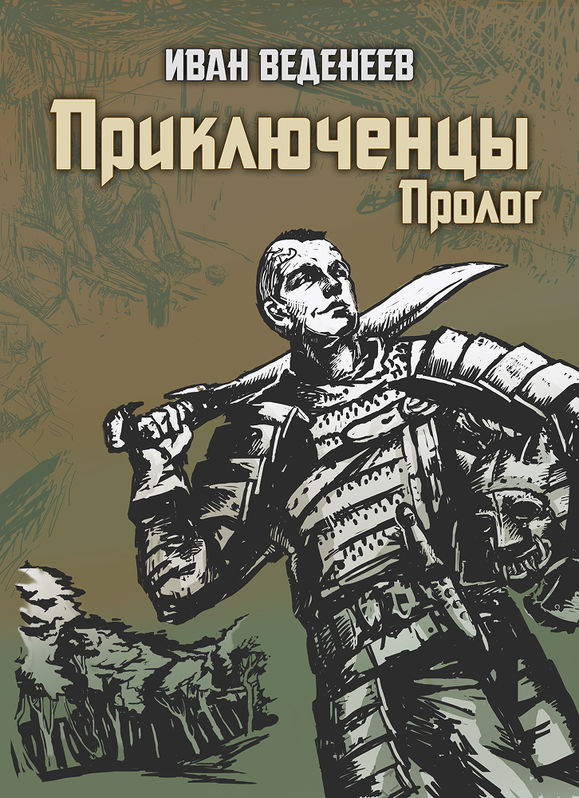
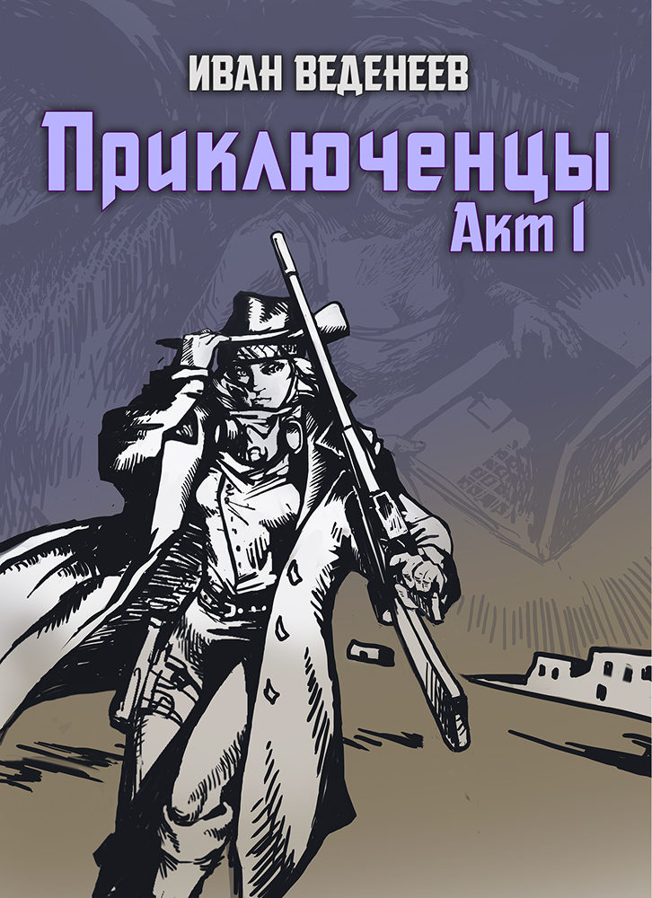
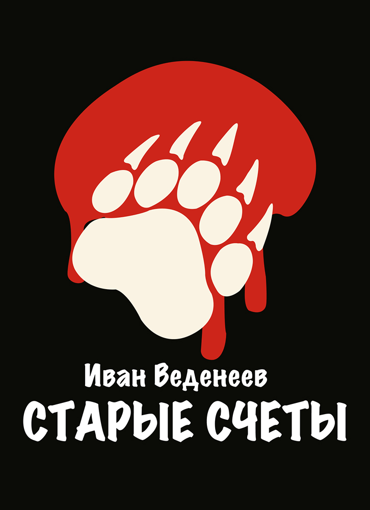
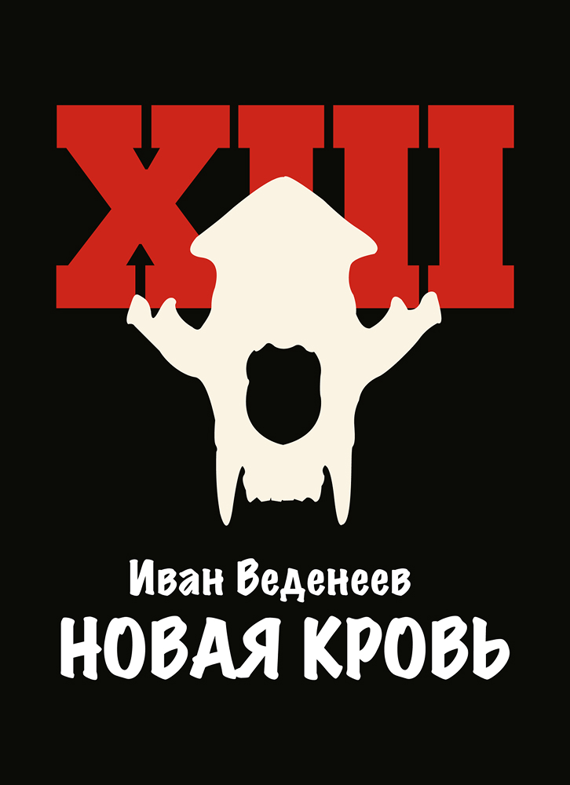
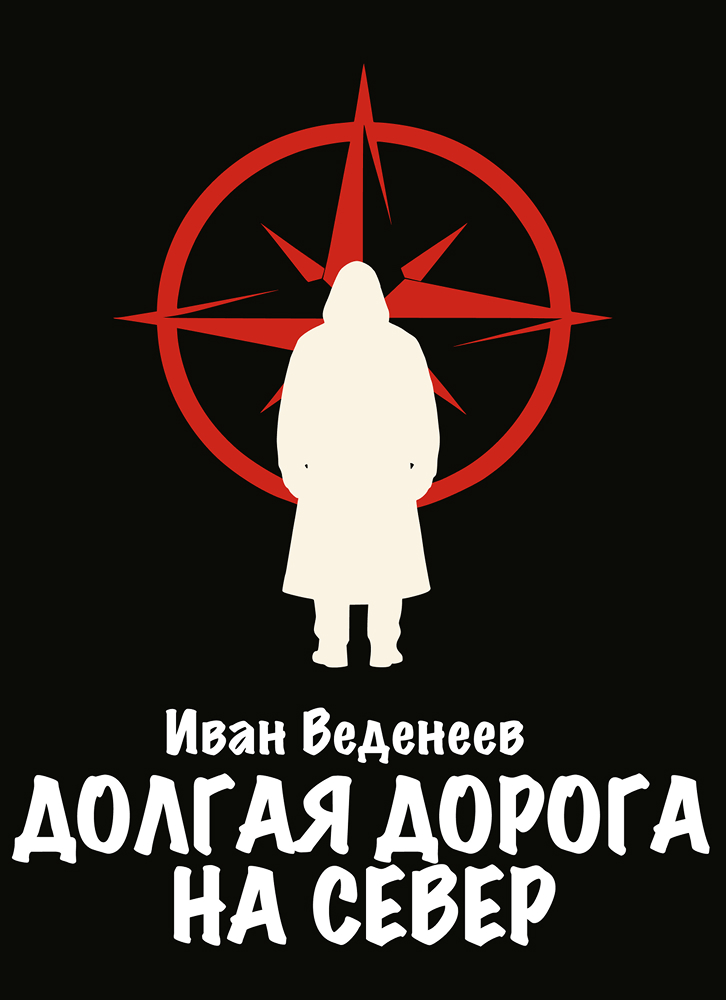
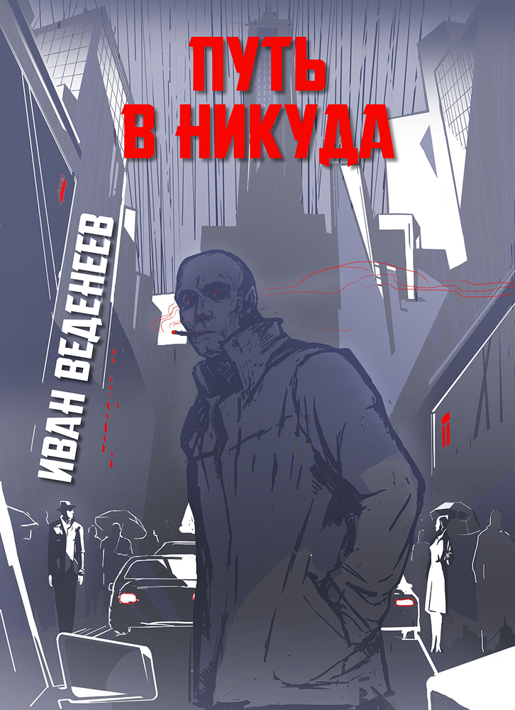

Приключенцы
Серия Приключенцы — стремительное, саркастичное и совершенно непредсказуемое путешествие по неизведанным мирам
Что делать, когда реальности недостаточно?
Для одних приключение — это способ сбежать от реальности. Для других — образ жизни. Серия Приключенцы — это хаотичное, наполненное юмором путешествие через разные миры, каждый из которых сильно отличается от предыдущего. В ней я издеваюсь над штампами классического фэнтези и фантастики, сверлю отверстия в четвертой стене и пытаюсь не забыть про что-то важное.
Умные и глупые шутки, экшн и герои, которые скорее отшутятся от беды, чем примут мир всерьёз. Эта серия для тех, кто любит приключения с изрядной долей несерьёзности.

Приключенцы: Пролог
Что случается, когда реальность встает на «паузу» — и вы оказываетесь внутри игры?
Для Артема, ака Дхола, и его друзей обычный вечер после совместной игры оборачивается чем-то необычным: их затягивает в фэнтезийный мир, который они видели на своих экранах. Их миссия?
• Найти способ вернуться домой, чтобы игра не стала их вечным заточением.
• Разобраться в правилах этого странного нового мира.
• И главное — получать удовольствие, пока всё это продолжается!
Это приключение — не только про квесты, сражения и штурмы крепостей. По пути Артур и команда встречают игровых персонажей, с которыми раньше не сталкивались, и между ними завязывается дружба. А уже когда вор и хиллер решают последовать за ними в реальный мир… становится ясно: всё только начинается.
Юмор, экшен и гора пасхалок из поп-культуры. «Приключенцы: Пролог» — это весёлая история о тонкой грани между игрой и реальностью.

Приключенцы: Акт I
Артем и Вадик были уверены, что наконец-то вернулись домой. Настоящий мир, Wi-Fi, скучная работа — и нулевые шансы быть сожранными драконом. Но ведь их игровые напарники отправились вместе с ними, так?
Так. Дальше — больше. Артем, нетерпеливый воин по призванию (и по жизни), уговаривает всех попробовать новую игру. Ну а что могло пойти не по плану? Правильно: вообще всё.
Теперь они в Пустошах — постапокалиптической пустыне с рэйдерами, подозрительными городами и совершенно необоснованным количеством всего, что стреляет.
Миссия? Найти Макса — друга, который попал сюда первым… и почему-то стал легендой. А заодно — выяснить, существует ли мифический Центр Пустошей, зелёный оазис посреди песков. Не без побочных активностей, конечно же.
В общем, пока они уворачиваются от пуль, пытаются найти местных боссов-рэйдеров и выживают в городе, где каждый либо обманывает, либо пытается пристрелить — времени на передышку нет. Хотя, в отличие от прошлой игры, на этот раз у них есть транспорт. Жаль только, что легче от этого не становится.
Приключение, полное движения, сарказма и, как всегда, пасхалок. Ну и куда же без финальной загадки, которая совсем не так эпична, как всем кажется.
Охотники
Мрачные истории из мира, который когда-то закончился
Земли, возрождённые после забытой катастрофы. Цивилизации, отстроенные на руинах прошлого. Вместе с ними вернулись они — монстры, мутанты, останки того, что никогда не должно было существовать.
Большинство исчезло. Люди забыли. Но тьма реальна — и в ней ходят Охотники. Наёмники с особыми способностями, солдаты на службе государства, а иногда и просто обычные люди. Те, кто выбрал — или был выбран — сражаться с тем, во что другие уже не верят.
Если Охотники существуют… значит, им есть на кого охотиться.
У каждого свой путь. Но все они ведут к одному.

Старые счёты
Порой, возвращаясь в родные места, находишь там совсем не то, что оставил во время отбытия. И странный отряд Охотников в черных одеждах, который встретился двоим торговцам-путешественникам на пыльной степной дороге — далеко не самое необычное из этого списка. В глухих предгорных лесах, окружающих небольшую деревеньку Медвежий Угол завелось кое-что пострашнее. Что-то или кто-то, что запросто могло бы встретиться в сказках, но вот беда, явилось и в реальности… Среди простых, далеких от Столицы людей, почти на самой границе обжитых земель. Добыча всегда притягивает охотника, а может, сейчас все было наоборот?
Узнаем в первой книге из цикла Охотники.

Новая кровь
В то время, когда вокруг Двенадцатой Башни разворачиваются довольно серьезные события, Столица продолжает жить своей обычной, безмятежной и сытой жизнью. Трое подростков, обучение которых подходит к концу, встают перед выбором своей дальнейшей судьбы. Военная карьера — это не шутки, и теперь им, мало того, что предстоит пройти через выпускной экзамен, но еще и определиться с Отрядом: одним из тринадцати специальных подразделений на службе страны.
Вторая книга из цикла Охотники.

Новая кровь
Теперь уже ясно, что Двенадцатая Башня стала местом притяжения различных сил не просто так. Но кто же этот мужчина в черном, что помог новобранцам из Тринадцатого Отряда и теперь направляется на север? И почему так вышло, что кроме него туда стекаются и остальные действующие лица пьесы, которой еще только предстоит быть сыгранной на самой границе Белой пустыни? Отряд Михаила, Тринадцатые, неизвестный в черном и другие — они еще столкнутся в единой точке.
А пока, понаблюдаем за долгой дорогой на Север, через двенадцать сторожевых башен Империи в третьей книге из серии Охотники.
За пределами серий
Истории, которые идут своим путём

Путь в Никуда
Осень выдалась холодной, а дожди, обрушившиеся на жителей Города, кажутся бесконечными, но обыватели четырех районов все так же спешат по своим делам: финансисты — на биржу, рабочие — на заводы, а бандиты — в темные переулки... Убийца ищет жертву, детектив — убийцу. Два человека с разной и одновременно похожей судьбой идут параллельно друг другу и когда-нибудь обязательно пересекутся. Возможно, у подножия возвышающегося над Городом Серебряного шпиля, а может, в кабинете его хозяина… Если только доживут до этой встречи и не сгинут в водовороте творящихся вокруг событий.
Эксклюзивные истории и новости
Присоединяйтесь к моему каналу, где я рассказываю о закулисье написания книг и делусь отрывками из текстов. Никакого ежедневного спама и перепостов чужих сообщений!
Подписаться в Telegram